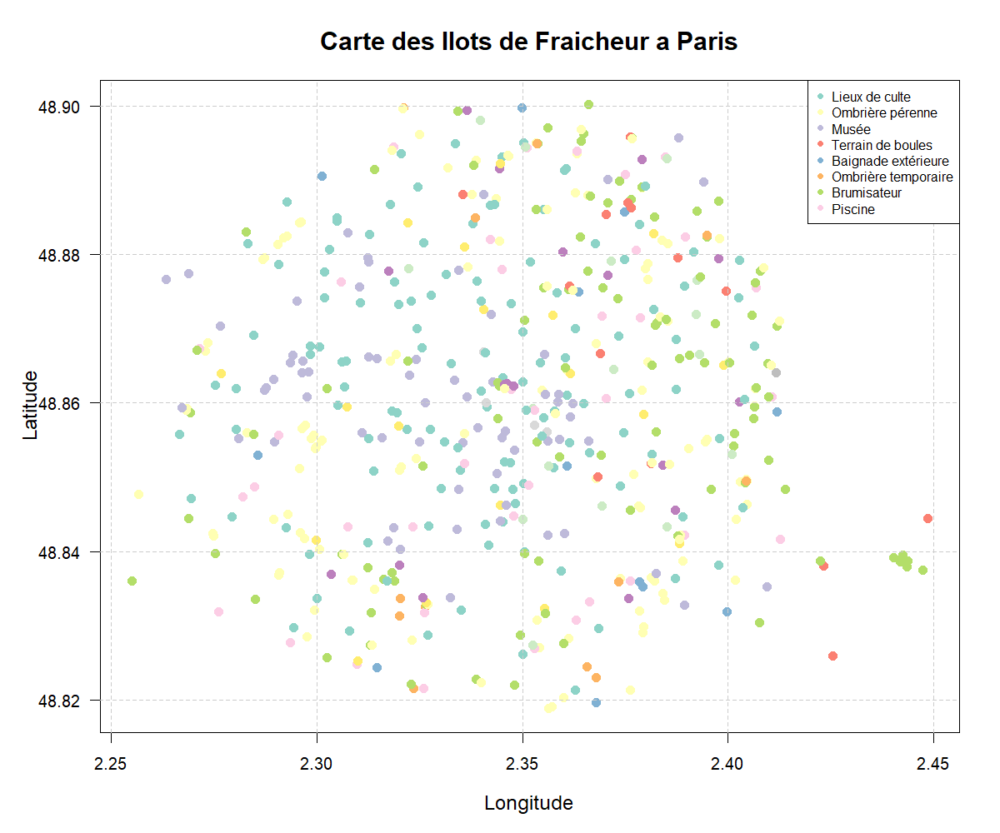
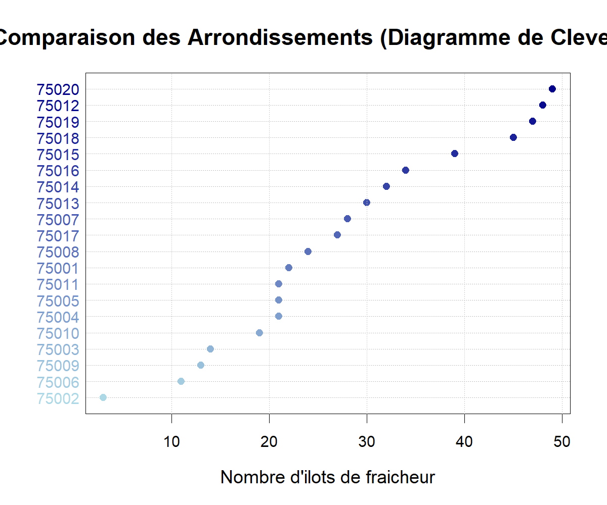

Visualisations Avancées
Cartes géographiques et graphiques interactifs
🗺️ Cartes Géographiques
Carte des îlots de fraîcheur
Cette carte montre la localisation de tous les îlots de fraîcheur à Paris, colorés selon leur type.

Chaque point représente un îlot de fraîcheur. Les couleurs indiquent le type d’équipement.
Carte de densité
La carte de densité révèle les zones de concentration des îlots de fraîcheur dans la capitale.

Les zones rouges indiquent une forte concentration d’îlots, tandis que les zones bleues sont moins équipées.
📊 Graphiques Avancés
Pyramide des arrondissements

Graphique radar
Le graphique radar permet de visualiser la distribution des 8 types d’équipements les plus fréquents.

Camembert 3D

Analyse à bulles
Ce graphique à bulles montre l’analyse croisée entre les arrondissements et les types d’équipements.

La taille des bulles est proportionnelle au nombre d’équipements. Les couleurs indiquent l’intensité.
Histogramme empilé

Diagramme de Cleveland

📁 Téléchargements
Les données et résultats sont disponibles au téléchargement :
- Répartition par types (CSV)
- Répartition par arrondissements (CSV)
- Statistiques d’accès (CSV)
- Résumé statistique (CSV)
Les visualisations révèlent :
- Distribution inégale : Les arrondissements périphériques sont mieux équipés
- Diversité des équipements : Plus de 10 types différents
- Accessibilité élevée : Majorité d’accès gratuit
- Concentration spatiale : Certaines zones ont une forte densité d’îlots